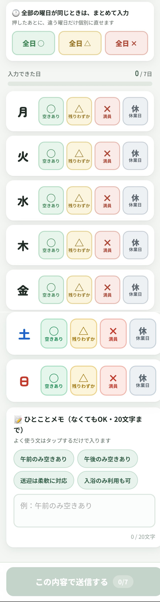
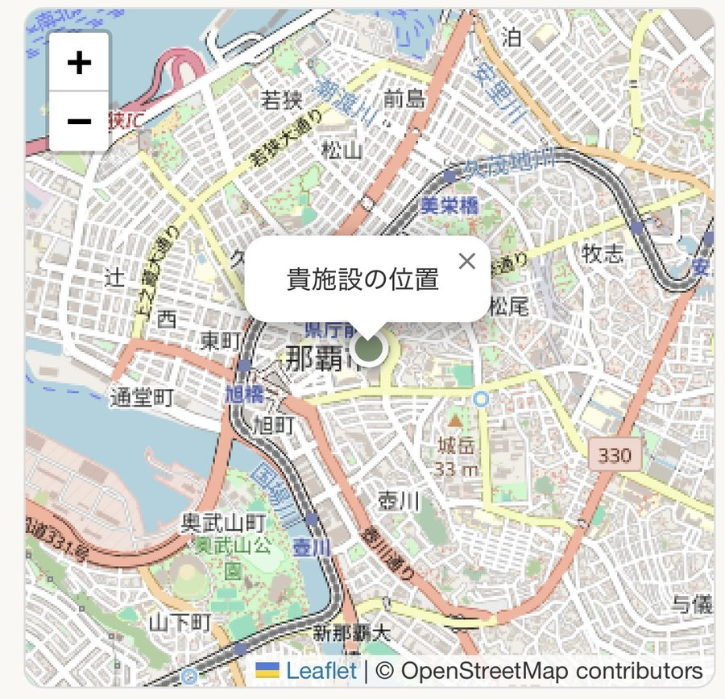
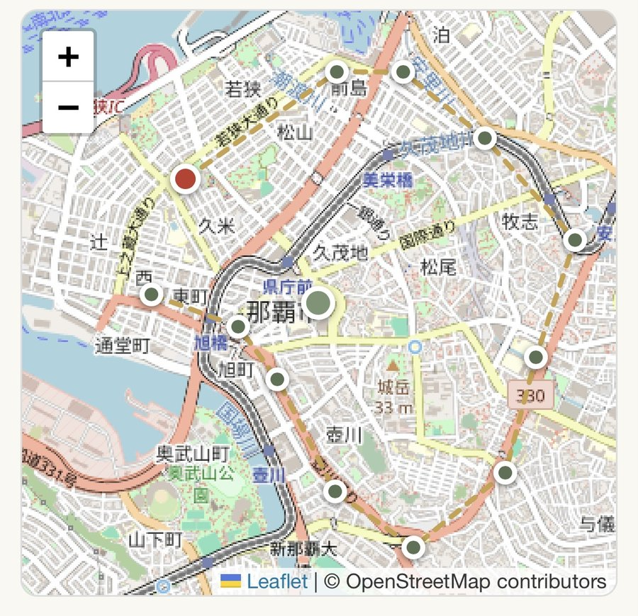
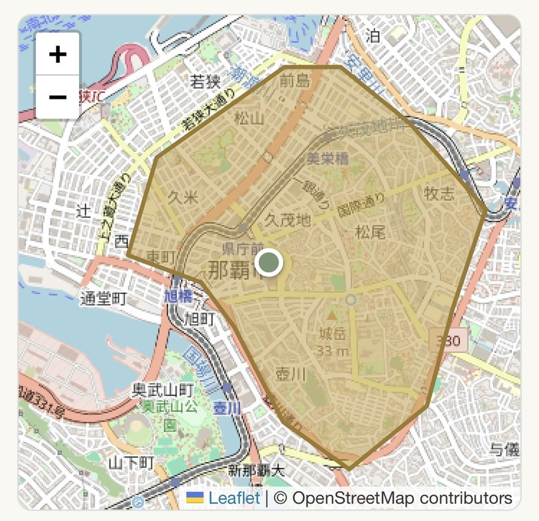

1
空き状況を更新する
お送りしている個別リンクを開くと、そのまま更新画面が表示されます。ログインの必要はありません。
1
曜日ごとに状況を選び、送信する
- 月〜日それぞれ、その週の空き状況をタップして選ぶ
- 全曜日が同じ状況なら「全日○／全日△／全日×」で一括入力（あとから個別に直せる）
- 必要があれば「ひとことメモ」を添える（よく使う文章はタップで入力可）
- 最後に「この内容で送信する」を押して完了

○ 空きあり
△ 残りわずか
✕ 満員
✅送信するとすぐに反映されます。入力にかかる時間はおよそ30秒です。
2
送迎範囲・施設の位置を登録する
初回登録時、またはお引越し・送迎エリア変更のときに行います。地図をタップしていくだけで完了します。
1
施設の位置を確認する
住所から自動でピンが立ちます。位置がずれている場合は、ピンを正しい場所までドラッグしてください。合っていれば「この位置で次へ進む」を押します。

2
送迎できる範囲の角を、順番にタップする
指でなぞるのではなく、1点ずつタップして頂点を置いていきます。最初にタップした点だけ赤色になります。

3
最後に、最初の赤い点をもう一度タップする
これで範囲が閉じます。途中で間違えても「やり直す」でいつでもリセットできます。
4
範囲を確認して保存する
囲んだ範囲が黄色く表示されます。問題なければ「この範囲で保存する」を押して完了です。

✅保存した範囲は、ケアマネさんが施設を探すときの検索に使われます。
?
よくある質問
施設情報（連絡先・受入条件など）を変更したい
なりすまし防止のため、情報の変更は自動では反映されません。お手数ですが公式LINEのトークにご連絡ください。確認の上、担当が変更いたします。
個別の更新リンクが分からなくなった
お手数ですが、公式LINEのトークにメッセージをお送りください。本人確認のうえ、リンクを再送いたします。
紹介用PDFはどこで見られますか
紹介用PDFは施設カードの「施設紹介PDF」ボタンから確認できます。内容の変更をご希望の場合はLINEでご連絡ください。